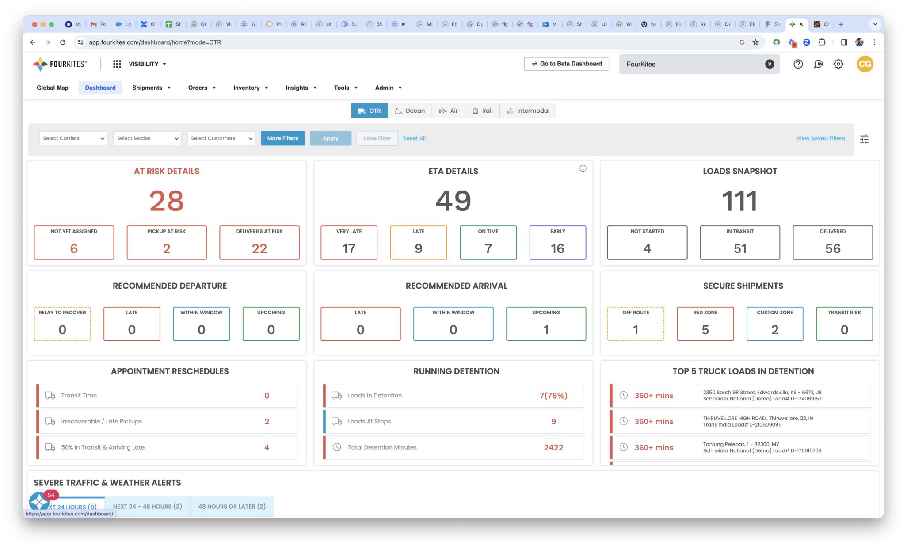
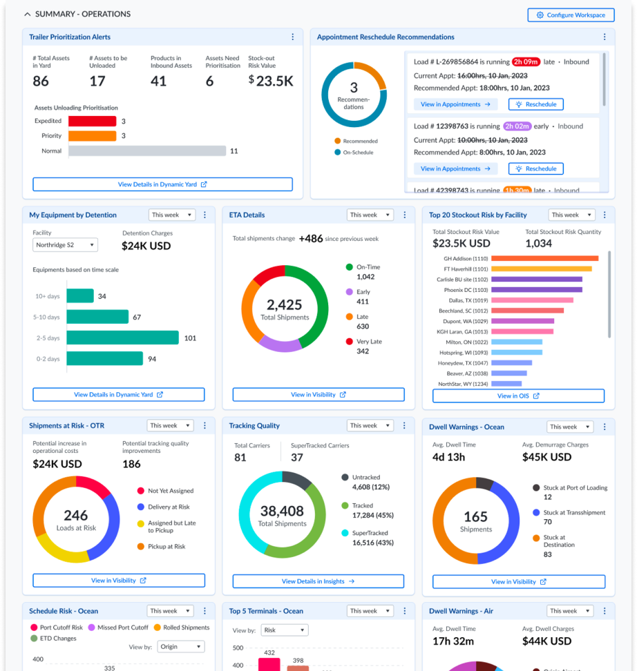

Workspace: An Integrated Customer Ecosystem
Redesigning the executive workspace to drive engagement and upsell opportunities across the FourKites platform.
Design Leadership · Strategy
Context & business challenge
Leadership identified a cross-sell and upsell gap: FourKites had multiple product lines, but customers were unaware of their full value. Our CEO raised it as a strategic concern — a lack of visibility across offerings was limiting adoption, engagement, and revenue growth. My mandate was to design a scalable ecosystem, Workspace, that unified the products, increased daily engagement, and unlocked upsell opportunities.
My role as Director of UX
I defined the vision, positioning Workspace as the single entry point into the FourKites ecosystem — both a customer success enabler and a growth driver — and secured alignment with the CEO, Sales, and Product leadership so the design vision mapped directly to business KPIs: NPS, engagement, and upsell. I directed two product designers and worked closely with engineering, data science, and sales on feasibility and adoption, and put customer voice at the center by establishing an Executive Customer Advisory Board (E-CAB) with VP+ stakeholders from Frito-Lay, Eastman, TJX, and 3M to co-shape use cases and validate solutions.
Key challenges
Three problems shaped the brief: product silos meant users struggled to discover and use cross-products; low daily engagement meant executives had no single control view of their supply chain; and sales friction meant upsells stayed reactive instead of being built into the workflow itself.

Design strategy
The redesign rested on five pillars: an atomic design system foundation for scalability and consistency across products; habit-forming design through a single, holistic workspace page driven by internal and external triggers; role-based customization with configurable widgets for executives versus operators; interoperability, surfacing actionable insights across licensed products instead of siloed dashboards; and a brand elevation pass toward a bolder, unified FourKites visual identity.

To prioritize the roadmap, I introduced a risk–effort–value model that let us frame design trade-offs in terms leadership could act on, and ran structured pilot testing with strategic accounts — tracking adoption analytics, sentiment surveys, and NPS to validate direction and refine the backlog.


Impact & key outcomes
Workspace was unveiled at FourKites' Visibility Conference to 800+ customers and became the event's standout moment. In the months after launch: executive usage increased 18% within 3 months, upsells grew 46% with 100+ new product leads generated and the first upsell closed within a month, and Executive NPS grew 32 points. Strategically, it repositioned FourKites from a "visibility provider" to a Control Tower ecosystem player.
In their words
"My Workspace has truly changed the way we interact with our supply chain data. It's become a daily habit to check the one-page holistic view, which allows us to quickly take action and manage disruptions effectively."
— Mari Roberts, VP of Transportation, Frito-Lay
"The flexibility to customize the dashboard based on our personas is fantastic. As an executive, I can arrange widgets to get a quick overview of key metrics, while our operational team can set up their workspace to focus on day-to-day tasks."
— Joe Garvin, Director of Global Logistics, 3M Company
"The centralised landing page having all relevant information in one place means we no longer waste time searching across different platforms."
— Tom Morton, VP of Global Supply Chain & Quality, Eastman Chemical Company
"Having all of FourKites' offerings consolidated into a single location is a game-changer. It allows us to make well-informed decisions about which products and services to utilize."
— Raina Avalon, Chief Logistics Officer, TJX